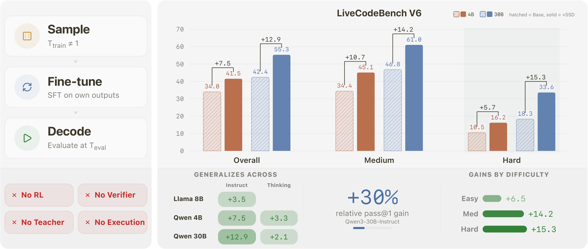
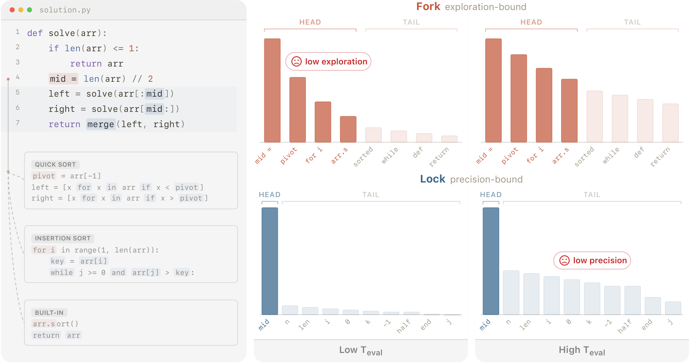
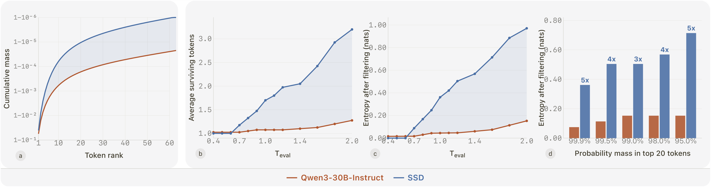

极简自蒸馏提升代码生成（SSD）
Embarrassingly Simple Self-Distillation Improves Code Generation
①开源贡献 Open-source Artifacts
论文首页直接给出代码仓库 github.com/apple/ml-ssd。解读日核实：代码仓库与三个 SSD 微调后的模型权重都已在 Hugging Face 真实发布。仓库含数据合成与评测 pipeline，README 标语「No rewards · No verifier · No teacher · No RL」。许可证为 Apple 自家 license（非标准 OSS 协议，使用前需读条款）。训练数据本身不直接打包发布，而是让用户用脚本基于公开的 rSTARcoder seed prompts 自己合成。
| 类型 | 是否开源 | 内容 / 链接 |
|---|---|---|
| 代码 Code | ✔ | github.com/apple/ml-ssd — 数据合成（data_generation/generate.py）+ 评测（evaluation/eval.py）+ 配置/prompt 模板。Apple license。 |
| 模型权重 Weights | ✔ | HF：apple/SimpleSD-4B-instruct、SimpleSD-4B-thinking、SimpleSD-30B-instruct（31B，MoE）。 |
| 数据集 Dataset | ✘（不直接发布） | 不打包发布合成数据；用仓库脚本从 rSTARcoder（Liu et al., 2025）seed 子集（去重 ~10K 竞赛编程题）自行生成。 |
| 环境 / Benchmark | — | 评测用公开 LiveCodeBench（v5/v6）；仓库提供评测脚本，未新建 benchmark。 |
| 项目主页 / Demo | — | 未见独立项目页或在线 demo（仓库即主入口）。 |
②研究动机与贡献 Motivation & Contribution
背景与问题
随着 LLM 被推向越来越难的编程任务，高质量监督信号成了瓶颈：人写的参考解法昂贵；合成数据流水线要么需要一个更强的 teacher model（蒸馏天花板被 teacher 框死），要么需要对每道题做基于执行的验证（execution-based verification）。RL with verifiable reward（如 GRPO 这类）操作复杂、训练可能不稳。用 intrinsic reward（majority voting、entropy minimization）的无监督路线则面临 reward hacking 与长训坍缩。于是一个自然的问题浮现：模型能不能完全不借助任何外部标注或验证，就自我提升？
本文的切入点
作者从代码生成的结构里看出了机会。代码序列交织着两类位置：fork（分叉位——多个续写都合理，对应不同解法路径，需要 exploration）与 lock（锁定位——语法语义几乎无歧义，正确 token 明确，但仍残留一条低概率的 distractor 尾巴，需要 precision）。这两类位置对 decoding temperature $T_\text{eval}$ 提出互相矛盾的需求：调低 $T_\text{eval}$ 锁住 lock 但饿死 fork；调高 $T_\text{eval}$ 救活 fork 但让 distractor 在 lock 处卷土重来。任何全局固定的 decoding 设置都只能折中——作者称之为 precision-exploration conflict。关键洞察是：在 temperature-shifted、truncated 的样本上做 SFT，会以 context-dependent 的方式重塑分布，从而缓解这个 conflict（lock 处更狠地压尾、fork 处保留多样性），而这是单纯改 decoding 设置做不到的。换句话说，现有代码模型在固定 decoding 下藏着没被释放的能力。
核心贡献
- 提出 SSD：仅用模型自身未经验证的输出 + 标准 cross-entropy，就能显著提升代码生成——无外部 teacher / verifier / reward model / 标注解法 / 执行环境 / RL。Qwen3-30B-Instruct 在 LCB v6 上 pass@1 42.4%→55.3%（相对 +30%），hard 题 pass@5 从 31.1%→54.1%。
- 证明这不是个例：在 两个家族（Qwen/Llama）、三种规模（4B/8B/30B）、两种风格（instruct/thinking）共五个模型上全部提升，增益集中在 medium/hard 题。
- 提出并论证 precision-exploration conflict 是 SSD 起作用的核心机制，并用「受控 toy 仿真 + 真实模型分析 + 理论分解」三路对齐的证据支撑；同时解释了为什么只调 decoding 无法复现这些增益。
- 给出一个目标函数分解（式 4），把 SSD loss 拆成 support compression（压尾）+ within-support reshaping（重塑头部）+ 对齐 base，说明 SSD 不只是 imitation。
③方法 Method
方法只有三步，简单到「令人尴尬」：(1) Sample——用某个训练期 temperature $T_\text{train}\neq 1$ 与 truncation $\rho_\text{train}$（top-k/top-p）从冻结的 base model 采样解法；(2) Fine-tune——对这些原始输出做标准 SFT；(3) Decode——部署后用评测期配置 $(T_\text{eval},\rho_\text{eval})$ 解码。整个过程只需要「一批题目 prompt + 模型本身」。

三步公式化
数据合成：对每道题 $x$ 采 $N$ 个候选解（实践中 $N=1$ 即足够）：
$$y \sim \mathrm{Decode}_{T_\text{train},\,\rho_\text{train}}\big(p_\theta(\cdot\mid x)\big)$$这些输出完全不验证——无执行、无测试用例、无正确性筛选，仅做极少量语法清洗（去掉空响应和单行 stub）。它们组成 $\mathcal{D}_\text{SSD}$。训练就是普通的 next-token 交叉熵：
$$\mathcal{L}(\theta) = -\mathbb{E}_{(x,y)\sim\mathcal{D}_\text{SSD}}\sum_{t=1}^{|y|}\log p_\theta(y_t\mid x, y_{为什么有效：precision-exploration conflict

mid 的复用是 lock（蓝）。低 $T_\text{eval}$ 保住 lock 却让 fork 失去多样性；高 $T_\text{eval}$ 救活 fork 却让 lock 的 distractor 尾巴复活——单一全局温度无法两全。（出处：原文 Figure 4）温度按 $p_T(v)\propto p(v)^{1/T}$ 整体拉平/锐化，是「全局」操作，无法区分 fork 与 lock。SSD 的作用是改变分布本身，让 lock 更安全、fork 更可探索，从而把可用的 decoding 区间整体拓宽，使得更高的温度变得新可用且有益。
理论分解（式 4）
SSD 拟合的是「base model 在 $(T_\text{train},\rho_\text{train})$ 下采样所诱导的分布」。设在某 context 下经温度缩放与截断后存活的 token 集合为 $S$、其上重整化分布为 $q$，$\mathrm{KeptMass}_\theta$ 为模型分配给 $S$ 的概率质量，$T\equiv T_\text{train}$，则诱导损失可写成：
$$\mathcal{L}(\theta)=\underbrace{-\log \mathrm{KeptMass}_\theta}_{\text{support compression (via }\rho_\text{train})}+\underbrace{(1-T)\,H_{1/T}\big(p_\theta(\cdot\mid S)\big)}_{\text{within-support reshaping (via }T_\text{train})}+\underbrace{T\cdot \mathrm{KL}\big(q\,\|\,p_{\theta,T}(\cdot\mid S)\big)}_{\text{对齐 base model}}+\text{const}$$$H_{1/T}$ 是 1/T 阶 Rényi entropy，$p_{\theta,T}(\cdot\mid S)$ 是模型在 $S$ 上的 tempered 分布。三项分工清晰：第一项压缩 support（把弥散的尾部质量挤掉、集中到少数可行 token）；第二项重塑头部；第三项让重塑结果在 $S$ 上对齐 base。lock/fork 的非对称由「哪些 token 进入 $S$」自然导出：lock 处只有少数 token 存活，support compression 主导，头部对 $T_\text{eval}$ 变得不敏感（更稳）；fork 处多个续写存活，within-support reshaping 有空间去拉平头部而不重开已丢弃的尾巴。这也是为什么 SSD 在降低总熵的同时还能保留头部 exploration——全词表熵被拆成 gate/head/tail 三部分，SSD 压低 gate+tail，head 在 fork 处仍可保持宽广。
- $N=1$ 单样本即可：每题只采一个解法就够，不需要大规模采样+筛选。
- $T_\text{train}\neq1$ 是关键：$T_\text{train}$ 控制 SSD 重塑分布的强度，$T_\text{eval}$ 控制解码时利用这种重塑的程度。无截断时二者通过 effective temperature $T_\text{eff}=T_\text{train}\cdot T_\text{eval}$ 组合，$T_\text{eff}\approx1.2$ 附近达峰（拟合 $R^2=0.75$）。
- 训练期 truncation 抬高天花板：在数据合成时加 $\rho_\text{train}$（如 top-k=10）能在温度组合之外再开一条增益通道。30B-Instruct 的最佳无截断配置约 49.7% pass@1，最佳设置 $T_\text{train}=2.0$、$T_\text{eval}=1.1$、训练期 top-k=10。
- 训练配置：Megatron-LM，8×B200（MoE 用 EP=8），AdamW + cosine decay，peak LR $5\times10^{-6}$，global batch 32，序列长 65,536；instruct 模型 2500 iter、thinking 模型 300 iter。采样用 vLLM，最长 128K。
- 数据来源：rSTARcoder seed 子集去重得 ~10K 竞赛编程题；只去空响应/单行 stub，绝无正确性信号。
④实验评估 Evaluation
评测设置
- Benchmark：主基准 LiveCodeBench v6（2025-02～05，按 easy/medium/hard 分层），辅以 LCB v5（2024-08～2025-02）确认。考察真实竞赛编程题的代码生成能力。
- 模型：Llama-3.1-8B-Instruct、Qwen3-4B-Instruct、Qwen3-4B-Thinking、Qwen3-30B-A3B-Instruct（MoE 30B/3B active）、Qwen3-30B-A3B-Thinking。
- 对比基线：各模型自身的 base（用官方推荐采样参数）；并与「只调 base 的 decoding（温度/截断 sweep）」对比，以证明增益不能靠改 decoding 复现。训练范式层面对照 SFT-on-external-data、GRPO、on-policy distillation 等（SSD 是其中唯一同时满足「dense signal + 无 teacher + 无 verifier + 无 privileged info」的）。
- 指标方向（均越高越好）：pass@1（主）、pass@5（覆盖度/exploration 的代理），并按 easy/medium/hard 分别报告。
主要结果
下表为 LCB v6 上 pass@1 的代表性结果（每对中第一行 base、第二行 +SSD，本文方法加粗）：
| 模型 | ALL | EASY | MED | HARD | pass@5 ALL |
|---|---|---|---|---|---|
| Qwen3-4B-Instruct | 34.0 | 79.7 | 34.4 | 10.5 | 41.0 |
| + SSD | 41.5 (+7.5) | 86.5 | 45.1 (+10.7) | 16.2 (+5.7) | 56.8 (+15.8) |
| Qwen3-30B-Instruct | 42.4 | — | — | — | 53.5 |
| + SSD | 55.3 (+12.9) | +6.5 | +14.2 | +15.3 | — |
| Llama-3.1-8B-Instruct | 12.7 | 46.8 | 5.4 | 0.0 | 23.0 |
| + SSD | 16.2 (+3.5) | 52.6 | 10.0 | 1.6 | 24.0 |
| Qwen3-4B-Thinking | 54.5 | 97.4 | 59.2 | 29.7 | 67.5 |
| + SSD | 57.8 (+3.3) | 98.7 | 62.8 | 33.8 | 71.4 |
| Qwen3-30B-Thinking | 66.1 | 99.8 | 73.0 | 41.5 | 76.7 |
| + SSD | 68.2 (+2.1) | 100.0 | 76.4 | 46.7 | 80.2 |
解读：五模型全部提升，instruct 模型增益更大（30B-Instruct +12.9pp 最亮眼），thinking 模型本身已强、空间小（+2~3pp）。增益集中在 medium/hard（30B-Instruct hard +15.3pp），且 pass@5 的提升普遍大于 pass@1（30B-Instruct hard pass@5 31.1%→54.1%）——说明 SSD 不是只锐化一个主导 mode，而是保住了跨解法分支的有用 exploration。LCB v5 上同样成立，排除过拟合特定时间窗的担忧。
消融 / 分析
只调 decoding 无法复现（原文 Figure 2）：对 base 做大范围温度 sweep，曲线极其平坦——30B-Instruct 的 pass@1 仅在 41.3%~43.5% 间波动（2.2pp）。SSD 相对「最佳调参 base」仍领先（30B-Instruct +11.8pp all / hard +13.3pp pass@1、+19.4pp pass@5）。证明 SSD 改的是模型本身，非任何 decoding 配置可替代。

三路对齐机制验证：toy 仿真（一个 fork + 三个 lock 的可闭式计算环境）复现了同样的折中困境，并显示 SSD 在 lock 处剥离尾巴、在 fork 处保留并拉平头部，使最佳解码温度大幅右移、成功率上升；真实模型（图 3）出现同样两个 signature；理论分解（式 4）给出解释。三者一致指向「training 让 lock 更安全、decoding 再去 fork 探索」的互补关系。
「坏数据，好结果」压力测试（原文 Figure 7）：把 $T_\text{train}$ 拉到 2.0 且关闭截断，合成数据约 62% 没有可提取代码、常中途退化成多语言乱码；按常规标准是不可用的 SFT 数据。但 SSD 仍把模型提到 48.1% pass@1 / 64.0% pass@5（+5.7 / +10.5pp），hard 题 pass@1 +7.3pp。这强烈暗示：增益主要不来自「在正确代码上训练」，而来自高温采样如何重塑 token 概率（此时需评测期截断 $\rho_\text{eval}$ 来补回精度，故增益小于带训练期截断的 headline 设置）。
⑤洞见 Insights
- 提升可以来自「分布重塑」而非「正确性监督」。SSD 不验证任何样本，甚至在近乎乱码的数据上仍提升——核心信号是「高温采样 + 截断」对 token 分布的 context-dependent 重塑，而不是模仿正确解法。这把「self-improve 必须靠 verifier/reward」的直觉撕开一道口子。
- 固定 decoding 下，模型藏着没释放的能力。precision-exploration conflict 意味着任何单一全局温度都是折中；训练能改变分布、解开这个折中，让更高温度变得新可用——而这正是只调 decoding 永远做不到的。training 与 decoding 是互补的两个阶段。
- 降低总熵 ≠ 失去 exploration。关键是「在哪儿降熵」：lock 处压尾（降熵、提精度），fork 处保留宽头部（保多样性）。pass@5 的提升大于 pass@1 正是这种非对称重塑的指纹。
局限与未来
(1) 增益依赖模型起点：thinking 模型本就很强，SSD 空间有限（仅 +2~3pp）；增益主要落在 instruct 模型与 medium/hard 题。(2) 仅在代码生成上验证——作者选代码是因为 fork/lock 结构特别可见，是否能直接迁移到数学/通用推理等领域尚待检验。(3) 超参敏感：$T_\text{train}$、$T_\text{eval}$、truncation 需要搜索，存在一个有界的可行操作区间（温度过高仍会崩）。(4) 论文定位 SSD 为「互补」的 post-training 方向，而非替代 RLVR；二者关系（能否叠加、谁先谁后）留待后续。
与相关工作的关系
与经典 self-training / 知识蒸馏 / 序列级蒸馏：SSD 只用 base model 的 temperature-shifted 样本 + 标准交叉熵，不引入 privileged context、feedback-conditioned teacher 或辅助监督。与 STaR / ReSTEM 等自训练：它们靠正确性筛选或外部反馈把自生成输出转成监督，SSD 则直接在未验证的原始输出上训。与 RLVR / GRPO：不需 reward、不需 verifier，操作简单且无 RL 的不稳定性；论文用一张训练范式对照表（Table 1）把 SSD 定位为唯一同时满足「dense signal + 无 teacher + 无 verifier + 无 privileged info」的方法。与 decoding/truncation 研究（top-k、nucleus、truncation-as-desmoothing）：SSD 不是新解码规则，而是说明「在 shifted decoding 下采样得到的样本上训练，能改变模型本身，让一个简单固定的解码策略在测试时显著更有效」。